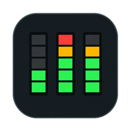

See live channel levels and fader positions for hardware inputs, software playback, and hardware outputs in a compact window or the macOS menu bar.
The macOS beta download is in preparation.

Requirements
- macOS 13 or later on Apple silicon or Intel.
- RME TotalMix FX 2.1 (shown as 2.10) or later with Global OSC enabled.
- Tested with the RME Fireface UCX II.
Installation and setup
- Open the disk image and drag TotalMix Mini Viewer to Applications.
- Open the viewer and use Connection Help to configure Global OSC in TotalMix FX on the same Mac.
The viewer provides read-only monitoring. The free beta has no time limit.